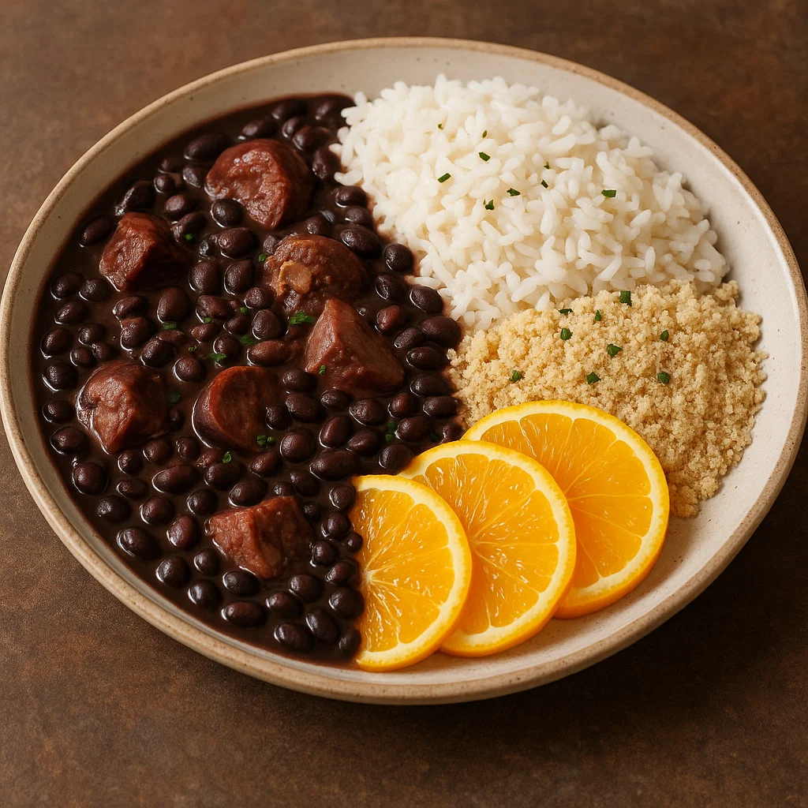

Feijoada
Guiso de frijoles negros con cerdo, acompañado de arroz, farofa y naranjas. la feijoada es el alma de Brasil, un banquete contundente que suele compartir toda la familia
- Origen: Rio de Janeiro.
- Características: guiso de frijol negro, cerdo, chorizo, tocino y costillas, acompañado de arooz, farofa y naranjas.
- Curiosidad: suele consumirse los fines de semana junto a la familia o los amigos.
